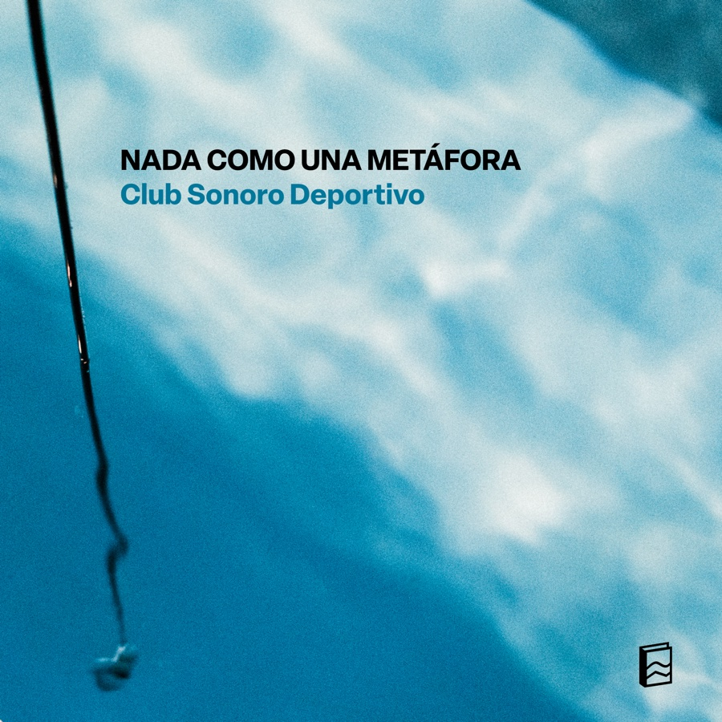

July, 2026

By Club Sonoro Deportivo
Published through Archivo Veintidós
Original idea: Fernanda Fábrega Rubio
Direction: Fernanda Fábrega Rubio and Matías Serrano Acevedo
VCV Rack programming: Santiago Corvalán Garretón
Recording, mixing and mastering: Santiago Corvalán Garretón
Coach: Gissela Cabrera
Cover photo: © Sebastián Arriagada
Performers: Amparo Saona Ríos, Deysi Cruz Vásquez, Inti Vega Jones, Jenniffer Verdugo Merello, Sergio Menares Navarro, Sofía Hurtado Tapia.
Swimmers: Amanda Aravena Letelier, Ana Campos Canessa, Andrea Rojas Milla, Andrés González, Beatriz Martínez Améstica, Camila Torres Ceballos, Claudia Williamson, Estefanía Vilches, Ignacio Ruano Suárez, Irene Farías Valdés, Javier Ramírez Arenas, María José Bravo, Matilda Morales, Natalia Lam, Ricardo Ramírez Lepe, Rocío Albornoz Marambio, Rodrigo Norambuena, Tamara Arenas Brito, Tamara Uribe Rojas, Yanniry Jaspe Sanguino.
Nada como una metáfora (Swim like a metaphor) is a sound-performative concert in which swimmers play the swimming pool as an instrument.
Live album of the concert held on March 28, 2026 at the Juan Gómez Millas Sports Field Pool, Universidad de Chile, as the closing of the project Aproximaciones subacuáticas.
Process documentation of Aproximaciones subacuáticas at the Juan Gómez Millas Sports Field Pool, Universidad de Chile, 2025-2026. © Sebastián Arriagada.